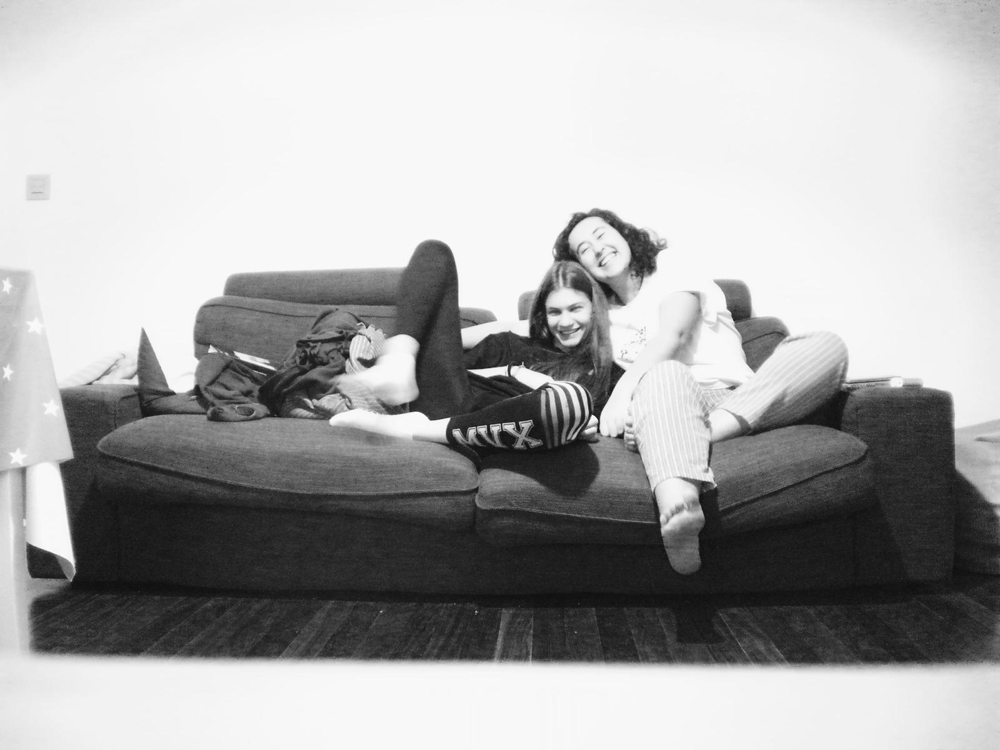

Almazuela es una revista, un proyecto de comunicación cultural que ha sacado un Trabajo de Fin de Máster de la Universidad para convertirlo en una herramienta para conectarnos con nuestra tierra. Pero sobre todo, es la integración de las diferentes realidades de La Rioja, es la difusión de un patrimonio y la apuesta por la cultura en una región de población reducida y diversa.
